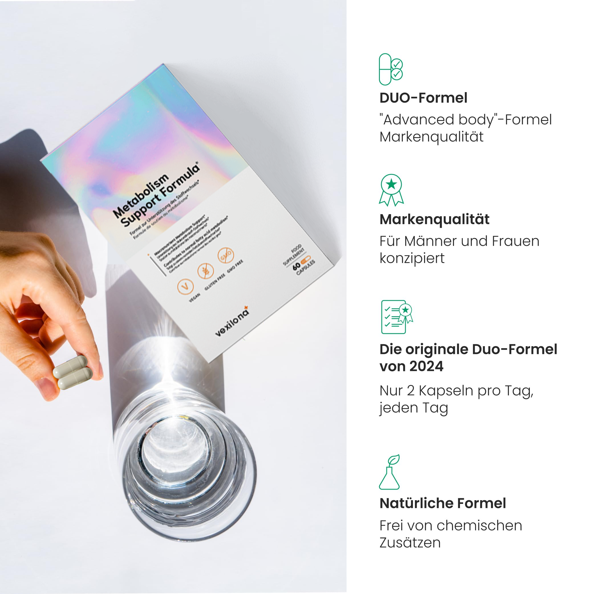

Der Wahnsinns-Deal: jeder in der Jury von „Die Höhle“ unterstützt dieses Produkt!
Ein Bericht von Ella Schmitz | Sonntag, April 20, 2025( Sonntag, April 20, 2025 - Es war die beliebteste Folge in der langen Geschichte von „Die Höhle“ – die Schwestern Anna, Lena und Janina Martin konnten mit ihrem einzigartigen Produkt die gesamte Jury überzeugen.)
Noch nie zuvor hat sich die gesamte Jury der „Höhle“ unabhängig voneinander dazu entschlossen Millionen von Euros in ein einziges Produkt zu investieren.
Nachdem die Jury unglaubliche 25% an Anteilen der Firma der Schwestern gekauft hatte, halfen sie den drei Schwestern persönlich ein re-branding und ein re-packing ihres Wunderproduktes vorzunehmen.
Die Schwestern hatten ein großartiges Produkt, jedoch hatten sie Probleme mit dem Marketing. Die drei Schwestern, die über Nacht berühmt wurden, haben ein Studium in der Ernährungswissenschaft sowie Sportmedizin hinter sich. Die Investoren erkannten sofort, dass es sich um ein großartiges Produkt handelt und die Schwestern "nur" Hilfe bei der Vermarktung benötigten.
Ihr Produkt priesen die drei Schwestern als „größten Schritt in der Geschichte des Gewichtsabnehmens“. Die Investoren waren zuerst skeptisch, jedoch konnten die drei Schwestern die Effektivität ihres Produkts mit wissenschaftlichen Studien belegen.

"Ich habe das großartige Potenzial von dem Produkt direkt erkannt und musste gleich investieren, bevor es die anderen taten. Wenn ich einen guten Deal sehe muss ich einfach zuschnappen!"
„Wir waren geschockt. Wir hatten eigentlich nur damit gerechnet ein paar Tipps zur Vermarktung zu bekommen. Wir waren uns nicht mal sicher, ob wir überhaupt einen einzigen Investor für uns gewinnen könnten.“, sagte Janina in der Folge.
Nach ganzen 5 Angeboten der einzelnen Investoren brachen die drei Schwestern in Tränen aus.
„Es fühlte sich nicht echt an. Vor uns saßen die erfolgreichsten Unternehmer Deutschlands. Und diese wollten unbedingt ein Teil von unserem Projekt sein. Ich glaube wir haben unser Produkt die ganze Zeit unterschätzt. Es war unglaublich und sehr emotional für uns!“ erklärt Anna.
Die Schwestern sind die ersten Teilnehmer in der langen Laufzeit der Show, die Standing Ovations und Investitionen von allen Jury-Mitgliedern erhielten. Das Leben der drei hat sich über Nacht schlagartig geändert.
Seit dem diese unglaubliche Folge aufgezeichnet wurde sind die drei
Schwestern hart am Arbeiten und nutzen die Tipps ihrer Investoren.
„Wir haben das Aussehen unseres Produkts komplett neu gestaltet und haben uns eine neue Verpackung überlegt.“ sagt Anna. "Wir sind gut im Labor und in der Produktentwicklung, aber wir haben keine Ahnung von Marketing. Deshalb sind wir heil froh, dass uns die Investoren so gut unterstützen."
Die drei haben ihr Produkt, mit dem sie Millionen von Euro an Investorengeldern einnahmen, vor kurzem bekannt gegeben.
„Das Produkt, welches wir in der Show gezeigt haben, wurde jetzt in Vexilona rebranded. Es ist die Original Formel – alles was wir geändert haben sind der Name und die Verpackung, sodass wir es besser ausserhalb von Europa vertreiben können.“ erklärt Janina. "Wir sind jetzt bereit in 2022 den Markt in den USA zu erobern. Auch die derzeitige Krise kann uns nicht aufhalten!"
Die drei starteten den Produktverkauf durch ihre Firmen-Website und waren innerhalb 5 Minuten ausverkauft.
„Wir haben sogar extra mehr Ware produziert als sonst. Wir haben quasi unser ganzes privates Geld in Ware gesteckt bevor wir in die Sendung sind. Wir haben ungefähr 10 mal so viel Produziert wie üblich. Es war wirklich anstrengend. Wir dachten, dass wir genug auf Lager hätten aber falsch! Wir haben tatsächlich alles innerhalb von 5 Minuten verkauft!“ freute sich Anna. "Es war einfach Wahnsinn!"
Während die „Höhle“-Juroren auf ihre clevere Investition anstoßen, schwärmen Frauen online von Vexilona und sagen, dass die Resultate dieses Produktes ihr Leben verändert haben.
Klinische Versuche von Vexilona haben beweisen können, dass Frauen die dieses Produkt nutzen ihren Fettanteil drastisch reduzieren konnten und das dies auch, bei weiterer Nutzung, so bleibt.
Trotz der guten Erfahrungen und vielen Verkäufe des Produkts standen die Löwen den Schwestern skeptisch gegenüber. Doch nachdem die Schwestern die klinischen Studien vorstellten, wurde auch der letzte Löwe überzeugt.
Damit konnten die drei Schwestern die Investoren überzeugen
Die Schwestern haben ihre ganze Energie dafür aufgebracht eine Formel zu entwickeln. Die klinischen Studien konnten mit ihrer Wirksamkeit jeden Investor überzeugen.Im Gegensatz zu vielen anderen Produkten die bereits in der Sendung vorgestellt wurden hat Vexilona mehrere Testreihen durchlaufen in denen folgende Punkte festgestellt wurden:
- die hochdosierten Vexilona werden durch die spezielle Formel von der Magenschleimhaut sofort aufgenommen
- das Präparat reguliert den Stoffwechsel des Körpers auf ein normales Niveau
- reguliert den Blutzuckerspiegel auf ein optimales Level, sodass es dem Körper schwerer fällt Fett in Zellen einzulagern
- vermeidet Heisshunger, sodass die Kalorienzufuhr verringert wird
Die Schwestern konnten sogar eine ganze Reihe Promis für sich gewinnen
“Vexilona ist unglaublich. Ich wurde gefragt ob ich die Kapseln ausprobieren möchte und habe direkt ja gesagt. Ich habe nach der Einnahme viel weniger Hunger und fühle mich super.“ - Maite Kelly
"Ich war Teilnehmerin bei der ersten Studie zu Vexilona. Mein Arzt hat mich für die Testreihe angemeldet, da mein Übergewicht lebensbedrohlich war. Ich habe 44 Kilo in der Studie mit Vexilona abgenommen. Ohne Sport und ohne Ernährung. Ich habe dadurch zwar schlaffe Haut am Bauch, weil ich so viel abgenommen habe, aber diese werde ich mir wegmachen lassen. Ich habe sehr gute Erfahrungen mit Vexilona gemacht und hatte keine nennenswerten Nebenwirkungen." - Anja
„Ich habe einen sehr hektischen Zeitplan und dadurch nicht viel Zeit für Sport. Genau deshalb liebe ich Vexilona! Nur ein paar Minuten am Morgen und am Abend reichen bei mir aus!“- Sonya Kraus
Gib dir selbst die Promi Behandlung
Die Vexilona Kapseln gibt es derzeit nur Online zu kaufen. Die Schwestern arbeiten gerade an einer Apothekenzulassung für Deutschland.
Das Produkt ist schwierig in der Herstellung und die Nachfrage ist derzeit höher als die Produktion. "Es ist wichtig für uns keine Kompromisse bei der Qualität zu machen", so Anna. "Aber durch die Löwen haben wir unsere Produktionskapazitäten stark ausbauen können, sodass wir alle Kundinnen und Kunden sofort beliefern können. Das fühlt sich sehr großartig an und jeder ist zufrieden."
Vexilona war seit der Ausstrahlung im September bereits 3 Mal ausverkauft. Als nächstes Ziel für 2025 haben sich die Schwestern mit den Löwen den amerikanischen Markt vorgenommen.